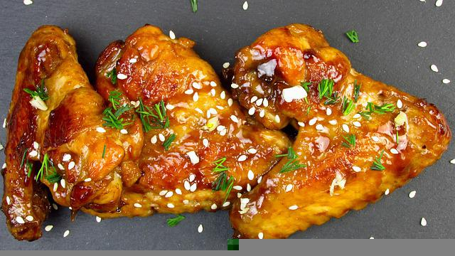

Chicken Wings Recipes
Yummy chicken wings that are so easy to fix on the stove top or in an electric skillet.




Ingredients
- 1 cup water
- ½ cup white sugar
- 2 teaspoons wine vinegar
- 1 tablespoon minced garlic
- ½ cup white limon
Steps
- In an electric skillet or a large skillet over medium heat
- Mix together the water sugar, soy sauce, peanut butter, honey, wine vinegar, and garlic until smooth and the sugar has dissolved
- Place the wings into the sauce, cover, and simmer for 30 minutes.
- Uncover and simmer until the wings are tender and the sauce has thickened, about 30 more minutes, spooning sauce over wings occasionally
- Sprinkle with sesame seeds
- In an electric skillet or a large skillet over medium heat
- Mix together the water sugar, soy sauce, peanut butter, honey, wine vinegar, and garlic until smooth and the sugar has dissolved